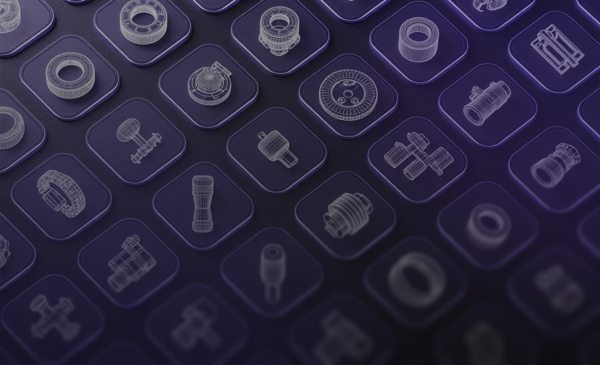
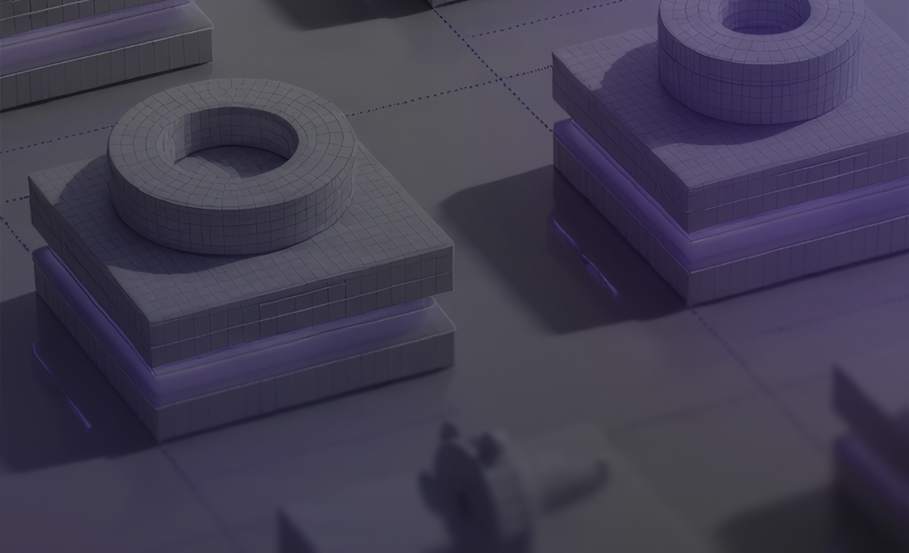

The Better
상상하지 못한 설계를 현실로
과거에는 시도하지 못했던 창의적 설계를
생성(Generation)하고 최적화(Optimization)합니다.
제품의 성능 한계를 돌파하여 기업의 매출 증대를
이끌어냅니다.

The Faster
기다림 없는 즉각적인 결과 확인
수일에서 수주가 소요되던 복잡한 해석과 시험 결과를
실시간으로 예측(Prediction)합니다.
물리적 제약을 뛰어넘는 속도로 개발 비용을 절감하고, 출시
일정을 앞당깁니다.